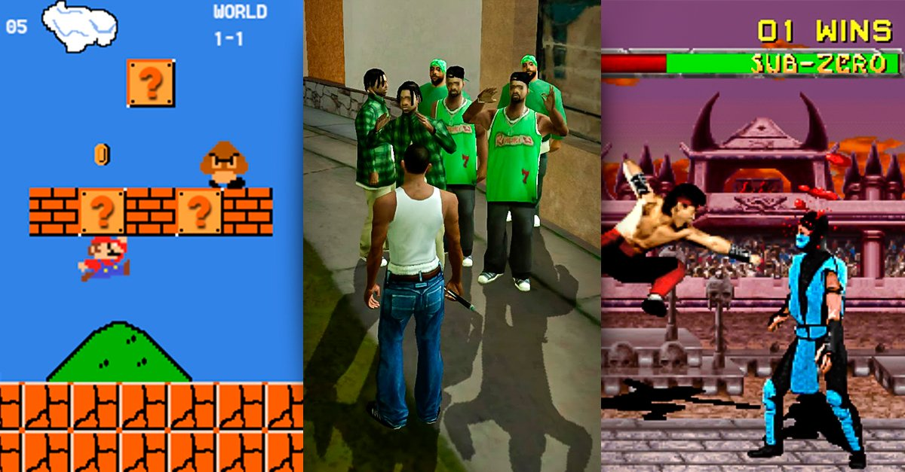
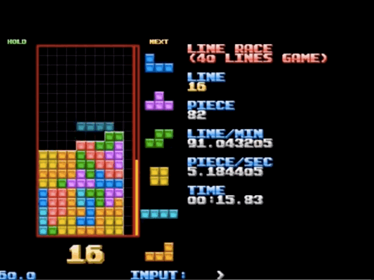
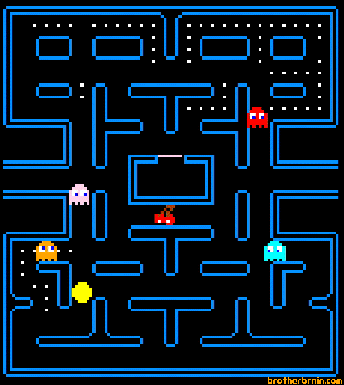
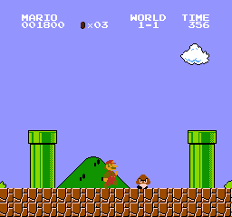
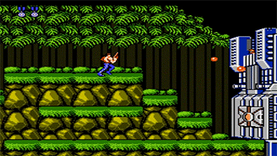
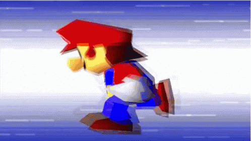

Desde Tetris hasta lo mas nuevo, te mostramos los mejores videojuegos de la historia, para que te diviertas y lo compartas con tus amigos.
Y empezamos esta lista con:
1) Tetris
Tetris® es un juego aparentemente sencillo, pero increíblemente adictivo. En Tetris® Twist avanzarás por diferentes ciudades mientras eliminas bloques. Descubre nuevas y divertidas formas de jugar a Tetris®, o disfruta del modo Maratón para jugar de la forma clásica
2)Pacman
Como ya sabes Pacman o Comecocos es uno de los videojuegos que arrasó en la época de los 80. Este mítico juego fue diseñado por Toru Iwatani, producido por la japonesa empresa Namco y distribuido por la empresa americana Midway Games en los años 80. (por si te puede interesar, aquí puedes conocer más sobre su historia).
3)Super Mario Bros
Super Mario Bros ha sido uno de los personajes con mayor repercusión en el mundo de los videojuegos. El pequeño fontanero se hizo un hueco en la escena virtual que fue cimentándose conforme más fieles le salían a lo largo de los años.
Texto con estilo: color
4)Contra
Entre los juegos de las viejas consolas este es uno de los más jugados. Existen muchas versiones del contra, en este caso te presentamos la versión original la que dió inicio a la leyenda.
4)Super Smash Bros
Uno de los mejores juegos clásicos entre los clásicos. Combates increíbles en una versión genial del clásico Super Smash Bros. ¡Nuevas mejoras en los combates! Disfruta de esta versión del famoso juego Super Smash Bros.
ESTOS FUERON ALGUNOS
DE LOS MEJORES JUEGOS CLASICOS